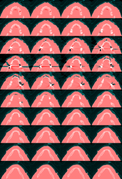
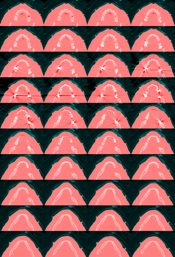

|

| ||
| teem | / | nrrd |
Making the Visible Man CT Head |
First, you'll need to get the data. Then, make some symlinks to the data and header directories:
ln -s ....../VisibleHuman/male/radiological/frozenCT data ln -s ....../VisibleHuman/male/radiological/frozenCTHeaders hdrs
One very useful trick: using zcat and unu feeding into xv, you can inspect one of the slices directly from disk, without saving out any other files:
zcat data/c_vm1100.fro.Z \ | unu make -t ushort -e raw -en big -s 512 512 -bs 3416 \ | unu quantize -b 8 \ | unu save -f pnm | xv -
Doing so reveals that slices (beginning with data/c_vm1006.fro.Z) up through and including data/c_vm1236.fro.Z are at high resolution, while data/c_vm1237.fro.Z through data/c_vm1259.fro.Z, which goes a tiny bit past the bottom of his chin, is at a coarser resolution. Below are selections from the output of
Information about slice 1236 appears first:diff -a hdrs/c_vm1236.fro.txt hdrs/c_vm1237.fro.txt
205c205 < Display Field of view - X (mm)...........: 270 --- > Display Field of view - X (mm)...........: 400 207,210c207,210 < Image dimension - X......................: 270 < Image dimension - Y......................: 270 < Image pixel size - X.....................: 0.527344 < Image pixel size - Y.....................: 0.527344 --- > Image dimension - X......................: 400 > Image dimension - Y......................: 400 > Image pixel size - X.....................: 0.78125 > Image pixel size - Y.....................: 0.78125 230,238c230,238 < R Coord of Top Left Hand Corner..........: 135 < A Coord of Top Left Hand Corner..........: 165 < R Coord of Top Right Hand Corner.........: -135 < A Coord of Top Right Hand Corner.........: 165 < R Coord of Bottom Right Hand Corner......: -135 < A Coord of Bottom Right Hand Corner......: -105 --- > R Coord of Top Left Hand Corner..........: 200 > A Coord of Top Left Hand Corner..........: 200 > R Coord of Top Right Hand Corner.........: -200 > A Coord of Top Right Hand Corner.........: 200 > R Coord of Bottom Right Hand Corner......: -200 > A Coord of Bottom Right Hand Corner......: -200
R, A, S stand for right, anterior, superior, pointing towards the right hand side, the nose, and the top of the head, respectively. The S coordinate changes by 1 mm each slice, and the slices are also 1mm thick. In terms of how the images are seen on screen, I believe the R ("right") direction actually points *LEFT*, and the A ("anterior") direction points up.
In order to find what portion of the lower-res images corresponds to the field of view in the high-res images, one can use teem's affine command. Interpret the first affine command as asking, "135 is inside the interval [200,-200] in the same way as what number is in the interval [0,511]?"
affine 200 135 -200 0 511 affine 200 -135 -200 0 511 affine 200 165 -200 0 511 affine 200 -105 -200 0 511
Which gives:
83.0375 427.962 44.7125 389.637
Rounding these to the nearest whole same, that means that if we crop slice 1237 to [83,428]x[45,390] (a 345x345 image), and resample it to 512x512, it should closely match slice 1236. To test this, put the two slices as the green and magenta components of an image:
zcat data/c_vm1237.fro.Z \
| unu make -t ushort -e raw -en big -s 512 512 -bs 3416 \
| unu crop -min 83 45 -max 428 390 \
| unu resample -s 512 512 -o 37.nrrd
zcat data/c_vm1236.fro.Z \
| unu make -t ushort -e raw -en big -s 512 512 -bs 3416 -o 36.nrrd
unu join -i 3{6,7,6}.nrrd -a 0 -incr \
| unu quantize -b 8 -o test0.png
unu resample -i test0.png -s = x0.4 x0.4 -o _test0.png
rm -f 36.nrrd 37.nrrd
The match looks pretty good. Now we copy all the image files for the top part of the head and make those into one nrrd:
cp data/c_vm123{0,1,2,3,4,5,6}.fro.Z .
cp data/c_vm12{0,1,2}?.fro.Z .
cp data/c_vm1{0,1}??.fro.Z .
uncompress *.Z
unu make -i *.fro -t ushort -e raw -en big -s 512 512 231 -bs 3416 -o top.nrrd
rm -rf *.fro
For some reason there is a glitch in image 1041 (slice 35 in top.nrrd); at least in my copy of the data. Rows 0 through 113 are shift right 8 pixels, and some garbage values appear in rows 114 through 119. We use unu to do surgery on this particular slice:
unu slice -i top.nrrd -a 2 -p 35 -o tmp.nrrd unu crop -i tmp.nrrd -min 8 0 -max M 113 \ | unu inset -i tmp.nrrd -s - -min 0 0 -o tmp.nrrd unu crop -i tmp.nrrd -min 340 105 -max 390 112 -o patch.nrrd unu inset -i tmp.nrrd -s patch.nrrd -min 340 113 \ | unu inset -s patch.nrrd -min 130 113 -o tmp.nrrd unu splice -i top.nrrd -s tmp.nrrd -a 2 -p 35 -o top.nrrd rm -f patch.nrrd tmp.nrrd unu slice -i top.nrrd -a 2 -p 35 -o tmp.nrrd unu crop -i tmp.nrrd -min 0 114 -max M-8 M \ | unu inset -i tmp.nrrd -s - -min 8 114 -o tmp.nrrd unu crop -i tmp.nrrd -min 348 105 -max 398 112 -o patch.nrrd unu inset -i tmp.nrrd -s patch.nrrd -min 348 113 \ | unu inset -s patch.nrrd -min 138 113 -o tmp.nrrd unu splice -i top.nrrd -s tmp.nrrd -a 2 -p 35 -o top.nrrd rm -f patch.nrrd tmp.nrrd
Now we get the slices comprising the rest of his chin and do the necessary cropping and resampling to create the rest of the dataset. Resampling is done with a radius 8 Hann windowed sinc.
cp data/c_vm123{7,8,9}.fro.Z .
cp data/c_vm12{4,5}?.fro.Z .
cp data/c_vm1260.fro.Z .
uncompress *.Z
unu make -i *.fro -t ushort -e raw -en big -s 512 512 24 -bs 3416 \
| unu crop -min 83 45 0 -max 428 390 M \
| unu resample -s 512 512 = -k hann:8 -o mid.nrrd
rm -rf *.fro
But wait, there's more! The resolution changes again with these slices:
cp data/c_vm126{1,2,3,4,5,6,7,8,9}.fro.Z .
cp data/c_vm12{7,8,9}?.fro.Z .
uncompress *.Z
unu make -i *.fro -t ushort -e raw -en big \
-s 512 512 39 -bs 3416 -o tmp.nrrd
rm -rf *.fro
And again there's a corrupted slice, great! Image 1295 (slice 34 in tmp.nrrd). More surgery:
unu slice -i tmp.nrrd -a 2 -p 34 -o slice.nrrd
setenv OFF 8
unu pad -i slice.nrrd -min -$OFF 0 -max M M \
| unu crop -min 0 0 -max M-$OFF M -o nslice.nrrd
unu slice -i tmp.nrrd -a 2 -p 33 -o a.nrrd
unu slice -i tmp.nrrd -a 2 -p 35 -o b.nrrd
unu join -i {a,b}.nrrd -a 0 -incr \
| unu project -a 0 -m mean -o avg.nrrd
unu 2op gt nslice.nrrd 3000 \
| unu 3op lerp - nslice.nrrd avg.nrrd -o nslice.nrrd
rm -f {a,b,avg}.nrrd
unu splice -i tmp.nrrd -s nslice.nrrd -a 2 -p 34 -o tmp.nrrd
rm -f slice.nrrd nslice.nrrd
Now, to determine how to crop and upsample to match the top:
diff -a hdrs/c_vm1236.fro.txt hdrs/c_vm1261.fro.txt ----> 205c205 < Display Field of view - X (mm)...........: 270 --- > Display Field of view - X (mm)...........: 480 207,210c207,210 < Image dimension - X......................: 270 < Image dimension - Y......................: 270 < Image pixel size - X.....................: 0.527344 < Image pixel size - Y.....................: 0.527344 --- > Image dimension - X......................: 480 > Image dimension - Y......................: 480 > Image pixel size - X.....................: 0.9375 > Image pixel size - Y.....................: 0.9375 225,226c225,226 < Center A coord of plane image............: 30 < Center S coord of Plane image............: -250 --- > Center A coord of plane image............: 0 > Center S coord of Plane image............: -275 230,238c230,238 < R Coord of Top Left Hand Corner..........: 135 < A Coord of Top Left Hand Corner..........: 165 < R Coord of Top Right Hand Corner.........: -135 < A Coord of Top Right Hand Corner.........: 165 < R Coord of Bottom Right Hand Corner......: -135 < A Coord of Bottom Right Hand Corner......: -105 --- > R Coord of Top Left Hand Corner..........: 240 > A Coord of Top Left Hand Corner..........: 240 > R Coord of Top Right Hand Corner.........: -240 > A Coord of Top Right Hand Corner.........: 240 > R Coord of Bottom Right Hand Corner......: -240 > A Coord of Bottom Right Hand Corner......: -240
Again, using affine to find where the high-res images live inside the low-res images:
affine 240 135 -240 0 511 affine 240 -135 -240 0 511 affine 240 165 -240 0 511 affine 240 -105 -240 0 511 -----> 111.781 399.219 79.8438 367.281
So now crop and upsample tmp.nrrd into bot.nrrd:
unu crop -i tmp.nrrd -min 112 80 0 -max 399 367 M \ | unu resample -s 512 512 = -k hann:8 -o bot.nrrd rm -f tmp.nrrd
Now the three parts are joined together, to create vmhead.nhdr:
unu join -i top.nrrd mid.nrrd bot.nrrd -a 2 \ | unu save -f nrrd -e gz -en big -o vmhead.nhdr rm -f top.nrrd mid.nrrd bot.nrrd
We'll edit the nhdr by hand so that its correct ...
NRRD0001 type: unsigned short dimension: 3 sizes: 512 512 294 spacings: 0.527344 0.527344 1.0 data file: ./vmhead.raw.gz endian: big encoding: gz
This completes the creation of a usable head dataset.
One annoying thing about this dataset are the floating bits in front of the face. To see the problem, we do a slight blurring, some arithmetic, and then use the "histo-min" nrrd measure to generate a rendering of the distance to isosurface 780. The image's funny aspect ratio is due to the voxels being non-cubic.
setenv THRESH 780 unu resample -i vmhead.nhdr -s x1 x1 x1 -k cubic:1,0 \ | unu 2op gt - $THRESH \ | unu project -a 1 -m histo-min \ | unu 2op exists - 0 -o before.nrrd unu heq -i before.nrrd -b 3000 -s 1 \ | unu rmap -r -m cmap.txt \ | unu quantize -b 8 -o problem.png unu resample -i problem.png -s = x0.4 x0.4 -o _problem.png
The floating bits can be removed with connected components. Unfortunately, the unu ccfind command takes on the order of an hour and a half to run, at least in the current (version 1.5) implementation. The unu minmax cc.nrrd is used to find the exact of number of components, so that a careful histogram of them can be created, in order to find a threshold on the component size, to filter out the stupid bits:
unu resample -i vmhead.nhdr -s x1 x1 x1 -k cubic:1,0 \ | unu 2op gt - $THRESH \ | unu ccfind -v vals.nrrd -c 1 -o cc.nrrd unu minmax cc.nrrd unu histo -i cc.nrrd -b 615 \ | unu save -f text \ | sort -rn | head unu ccmerge -i cc.nrrd -s 200000 -c 1 \ | unu ccmerge -s 200000 -c 1 \ | unu lut -m vals.nrrd -min 0 -max 614 -o cc2.nrrd echo rm -f vals.nrrd unu project -i cc2.nrrd -a 1 -m histo-min \ | unu 2op exists - 0 -o after.nrrd unu join -i before.nrrd after.nrrd -a 0 \ | unu heq -b 3000 -s 1 \ | unu rmap -r -m cmap.txt \ | unu quantize -b 8 -o fix0.png unu resample -i fix0.png -s = x0.4 x0.4 -o _fix0.png unu resample -i fix0.png -s = 143 85 -o __fix0.png
But wait, there's more problems. There's some stuff connected to his lips which doesn't belong, but connected components can't remove it. So, we resort to tiling the problem slices, to create editme0.png, and editing this in photoshop to produce editme1.png.
unu crop -i vmhead.nhdr -min 110 30 161 -max 400 200 200 -o prob-val.nrrd
unu crop -i cc2.nrrd -min 110 30 161 -max 400 200 200 -o prob-cc.nrrd
unu gamma -i prob-val.nrrd -g 2 | unu quantize -b 8 -o prob-valUC.nrrd
unu 2op x prob-cc.nrrd 255 | unu convert -t uchar -o prob-ccUC.nrrd
unu join -i prob-{cc,val,val}UC.nrrd -a 0 -incr \
| unu axsplit -a 3 -s 4 10 | unu permute -p 0 1 3 2 4 \
| unu axmerge -a 1 | unu axmerge -a 2 -o editme0.png
rm -f prob-*.nrrd
unu resample -i editme0.png -s = x0.15 x0.15 -o _editme0.png
unu resample -i editme1.png -s = x0.15 x0.15 -o _editme1.png
Here are the images involved. The red channel reflects membership in the main connected component, the other channels are guidance for the editing:
|  |  |
| editme0.png | editme1.png |
unu slice -i editme1.png -a 0 -p 0 \ | unu axsplit -a 0 -s 291 4 | unu axsplit -a 2 -s 171 10 \ | unu permute -p 0 2 1 3 | unu axmerge -a 2 \ | unu 2op / - 255 -t ushort \ | unu inset -i cc2.nrrd -min 110 30 161 -s - \ | unu save -f nrrd -e gz -o cc3.nrrd rm -f cc.nrrd cc2.nrrd unu project -i cc3.nrrd -a 1 -m histo-min \ | unu 2op exists - 0 -o final.nrrd unu join -i before.nrrd after.nrrd final.nrrd -a 0 \ | unu heq -b 3000 -s 1 \ | unu rmap -r -m cmap.txt \ | unu quantize -b 8 -o fix1.png rm -f before.nrrd after.nrrd final.nrrd unu resample -i fix1.png -s = x0.4 x0.4 -o _fix1.png
So, after all this, cc3.nrrd contains a relatively glitch-free mask for the soft-tissue region that contains all voxels of interest. We expand this mask out a little bit and soften its edge by successive blurring and thresholding operations (this is one way to implement a morphological "grow" operation):
unu convert -i cc3.nrrd -t float \ | unu resample -s x1 x1 x1 -k cubic:2.5,1,0 \ | unu 2op gt - 0.25 \ | unu resample -s x1 x1 x1 -k cubic:2.5,1,0 \ | unu 2op gt - 0.25 \ | unu resample -s x1 x1 x1 -k cubic:2.5,1,0 \ | unu save -f nrrd -e gz -o cc4.nrrd
Then use this as a lerp weight between the original data and data clamped to the peak of the background value:
unu 2op min vmhead.nhdr 330 \ | unu 3op lerp cc4.nrrd - vmhead.nhdr \ | unu convert -t ushort \ | unu save -f nrrd -e gz -en big -o vmhead2.nhdr
And again edit the nhdr by hand so that its correct ...
NRRD0001 type: unsigned short dimension: 3 sizes: 512 512 294 spacings: 0.527344 0.527344 1 data file: ./vmhead2.raw.gz endian: big encoding: gz
Piece of cake. Finally, we grab his ear for safe keeping:
unu crop -i vmhead2.nhdr -min 75 215 80 -max 144 349 184 -o ear.nrrd
{kind=link}
{kind=link}